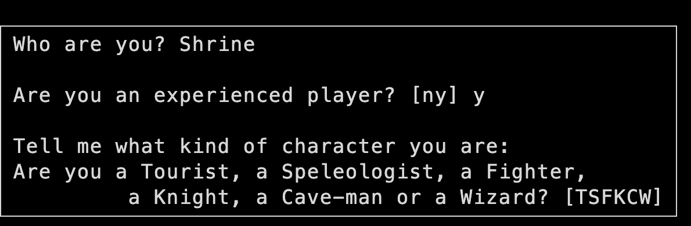
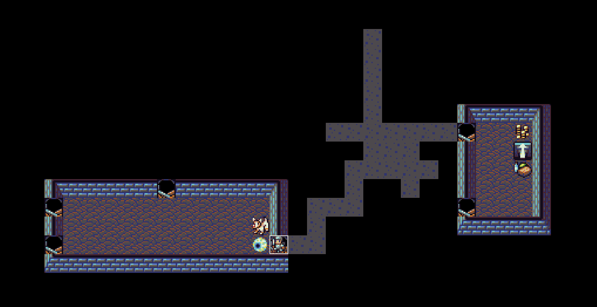
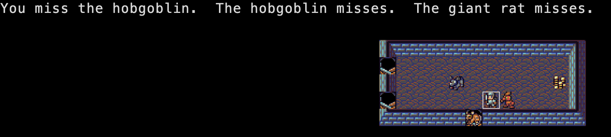
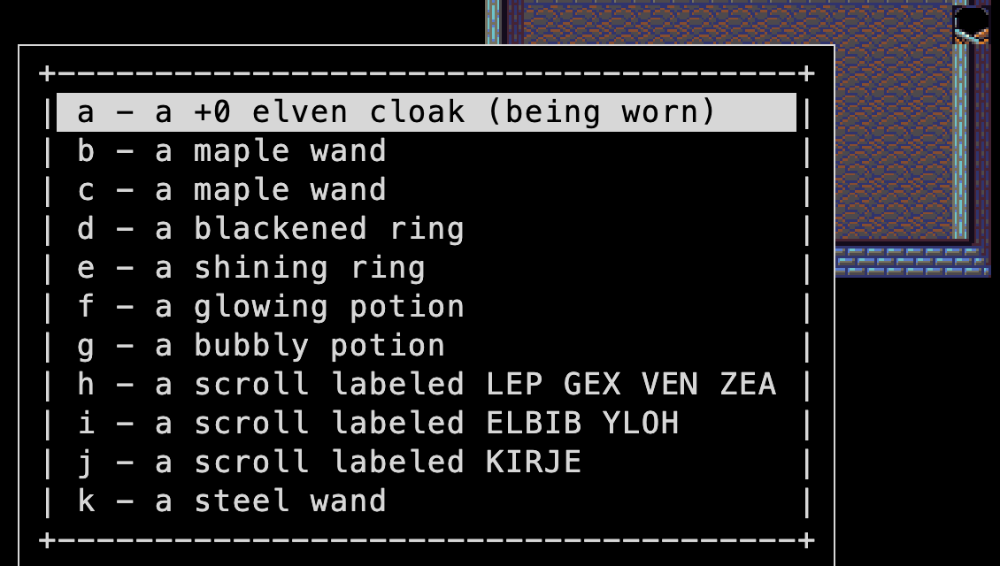

Rogue with a dog and a shopkeeper · the game NetHack grew from
> Enter the dungeonHack is new code inspired by Rogue. Jay Fenlason wrote it in 1982 at Lincoln-Sudbury Regional High School with Kenny Woodland, Mike Thome and Jonathan Payne; his READ_ME calls it “an implementation of Rogue” with 52+ instead of 26 monster types. He learned Rogue at the SFSU Logo Workshop.
Andries Brouwer took it over at the Mathematisch Centrum in Amsterdam and rewrote almost all of it; by his own note the result was “more than thrice as large”, with the dog, the long worms and the shops. His versions went out on Usenet from 1984; 1.0.3 (July 1985) was the last, and the one BSD Unix shipped. Don Kneller ported it to MS-DOS (PC Hack), and NetHack (1987) grew out of Hack. This page's game is restoHack, a restoration of 1.0.3 for modern compilers. See the family tree.
| Jay Fenlason | Original author (1982) |
| Kenny Woodland, Mike Thome, Jon Payne | Helped Fenlason: the original buzz(), the chameleon, the lock file and the screen code |
| Andries Brouwer | Rewrote and extended it into Hack 1.0–1.0.3 (1984–85), Stichting Mathematisch Centrum |
| Don Kneller | MS-DOS port (PC Hack), a sibling of this version |
| Critlist | restoHack, the restoration this port is built from (Critlist/restoHack @ 0bd798b) |
| DragonDePlatino, DawnBringer | DawnLike tiles (CC-BY 4.0); the NetHack 3.6 tiles are the alternative |




hack.shk.c is the shopkeeper, hack.dog.c the pet, hack.worm.c the long worm.termcap escape codes, not curses. The data tables: def.objects.h lists every item, hack.monst.c every monster.| Thing | Count | Notable ones |
|---|---|---|
| Classes | 6 | The Tourist carries an expensive camera; the Speleologist starts with a pick-axe and digs. |
| Monsters | 57 | The cockatrice, the leprechaun, the nymph, the long worm (grows a tail), the xan, the zruty, the nurse, the shopkeeper and the wizard of Yendor guarding the Amulet. |
| Potions | 16 | Booze, fruit juice, sickness, gain level, levitation. |
| Scrolls | 21 | Genocide, punishment (a ball and chain), amnesia, and a mail scroll. |
| Rings | 19 | Teleport control, conflict, protection from shape changers, hunger, aggravate monster. |
| Wands | 18 | Wishing, digging, polymorph, undead turning, death. |
| Weapons | 18 | Crysknife, worm tooth, boomerang; a two-handed sword named Orcrist is the one artifact. |
| Armour | 12 | From leather armour to plate mail, plus elven cloak, helmet, shield, pair of gloves. |
| Traps | 8 | Bear trap, arrow, dart, trapdoor, teleport, pit, sleeping gas, piercer; plus mimics posing as items. |
| Levels | 40 | Mazes from about level 26; the Amulet of Yendor is in a maze on level 30 or deeper. |
| Spells | 0 | Magic lives only in items. |
The manual page shipped with the source, hack(6) (text), and the in-game introduction, help (text). Both © Stichting Mathematisch Centrum, 1985, under its BSD-style licence.
We found no walkthrough: every dungeon is different. Rules of thumb:
hack -D, for the user named in config.h) exists in the source but can't be reached in the browser: the page doesn't pass -D.